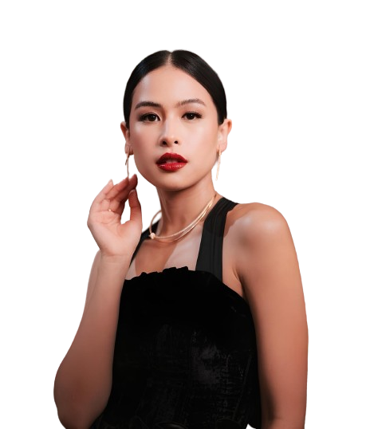
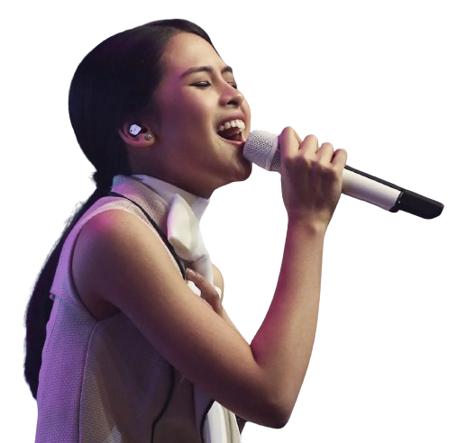

Ayunda Faza Maudya, B.A., M.A., M.B.A., dikenal sebagai Maudy Ayunda (lahir 19 Desember 1994) adalah aktris, model, aktivis, penulis, dan penyanyi-penulis lagu berkebangsaan Indonesia.
Maudy Ayunda
Aktris, Penyanyi, Penulis Lagu

Diskografi
- Panggil Aku... : 2011
- Moments : 2015
- Oxygen : 2018
- The Hidden Tapes : 2021

Riwayat Pendidikan
- SMA - Brithis School Jakarta
- 2013 - 2016 : S1 - Oxford University, Inggris - Philosophy, Politics, and Economics(PPE)
- S2 - Stanford University, California - Master of Business Administration(MBA)